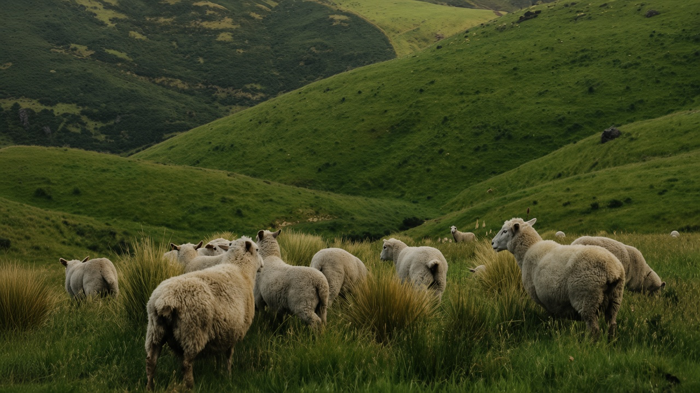
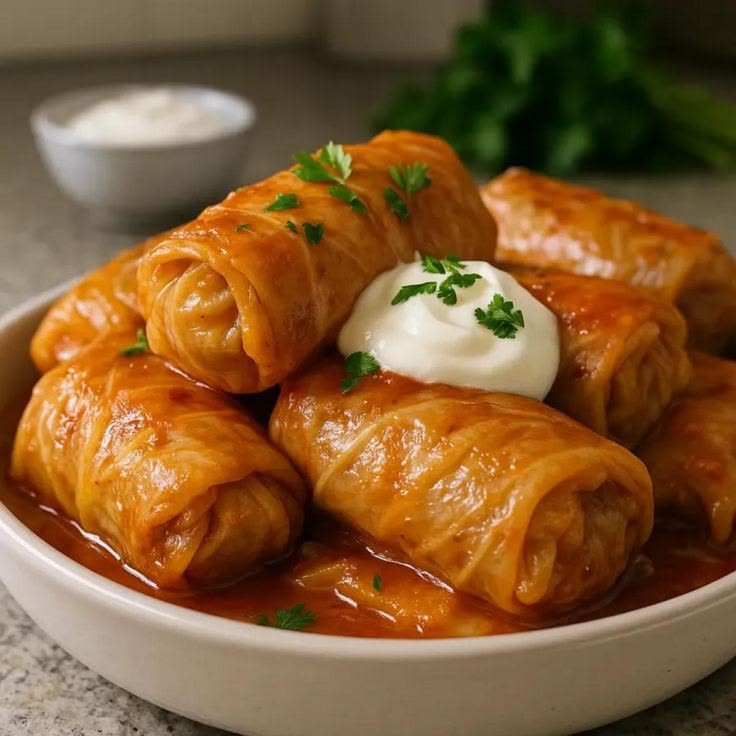
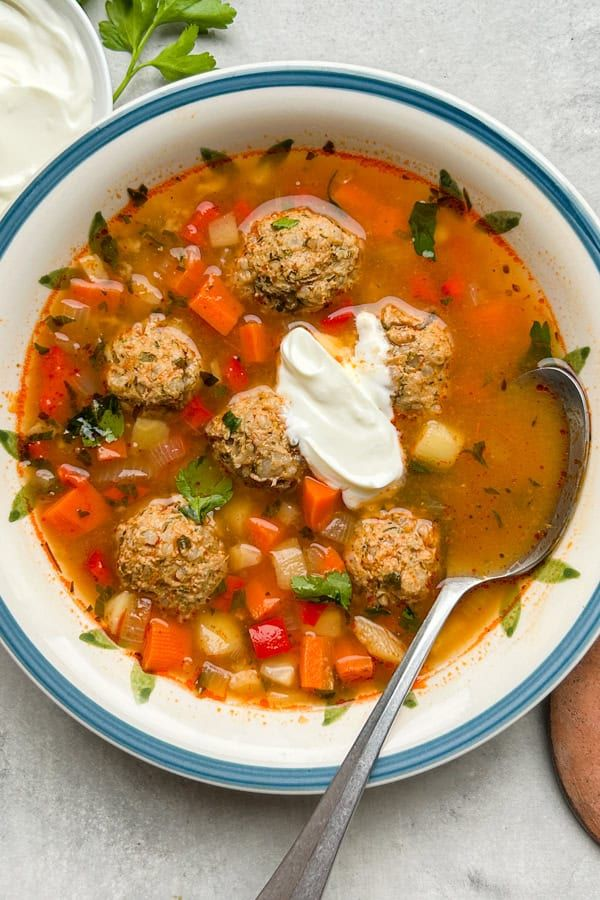
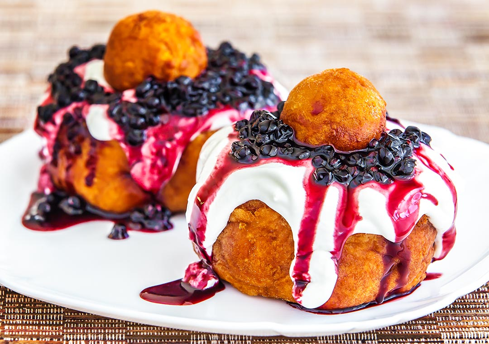
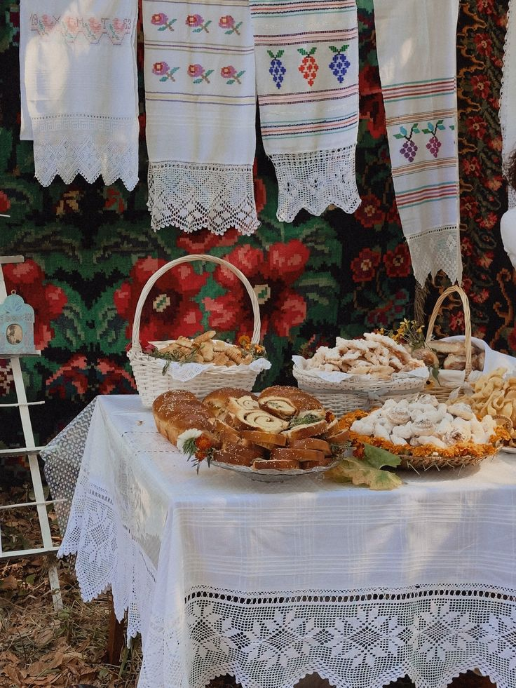

 RESTAURANT MOLDOVENESC · BACĂU
RESTAURANT MOLDOVENESC · BACĂU

Miorița — restaurant moldovenesc în Bacău
„Pe-un picior de plai, pe-o gură de rai...”

Un gând de bun venit
Sunt locuri în care ajungi.
Și gusturi la care te întorci.
Din 1977, Restaurantul Miorița face parte din povestea gastronomică a Bacăului, păstrând vie dragostea pentru bucătăria românească și pentru mesele care adună oamenii împreună. De-a lungul anilor, a devenit un nume cunoscut în oraș, un loc în care tradiția se regăsește în gustul mâncărurilor, în bucuria unei mese savuroase și în plăcerea de a reveni acolo unde te simți bine.
La Miorița, credem că mâncarea bună înseamnă mai mult decât un preparat așezat pe masă. Ne inspirăm din bogăția bucătăriei românești și din tradițiile culinare moldovenești, aducând mai aproape de oaspeții noștri acele gusturi familiare care ne amintesc de mesele de acasă, de rețetele îndrăgite și de momentele petrecute alături de cei dragi.
Pentru noi, tradiția nu înseamnă doar să păstrăm gusturile de odinioară, ci și să le ducem mai departe, din generație în generație, prin fiecare masă servită și fiecare oaspete care ne alege.
Galerie
Din cartea noastră de bucate
Gusturi pe care le recunoști.
-

Sarmale cu mămăligă
Varză, umplutură bine potrivită și smântână alături.
-

Ciorbă rădăuțeană
Pui, legume, smântână și usturoi, într-o ciorbă ușor acrită, ca în Bucovina.
-

Papanași cu dulceață
Rumeni, pufoși, cu smântână și vișine din belșug.
La masă

Pentru zile de ținut minte
Oamenii dragi.
La aceeași masă.
Aniversări, întâlniri de familie sau o masă doar a voastră. Spune-ne ce sărbătorești și gândim împreună detaliile.
Povestește-ne despre evenimentPoveștile bune
au loc la masă.
Vino cu ai tăi, cu pofta de bucate românești și cu o poveste de spus. Pentru o masă împreună, hai să vorbim.
Sună-ne pentru o rezervareSă ne fie de bine. Și să ne mai vedem.